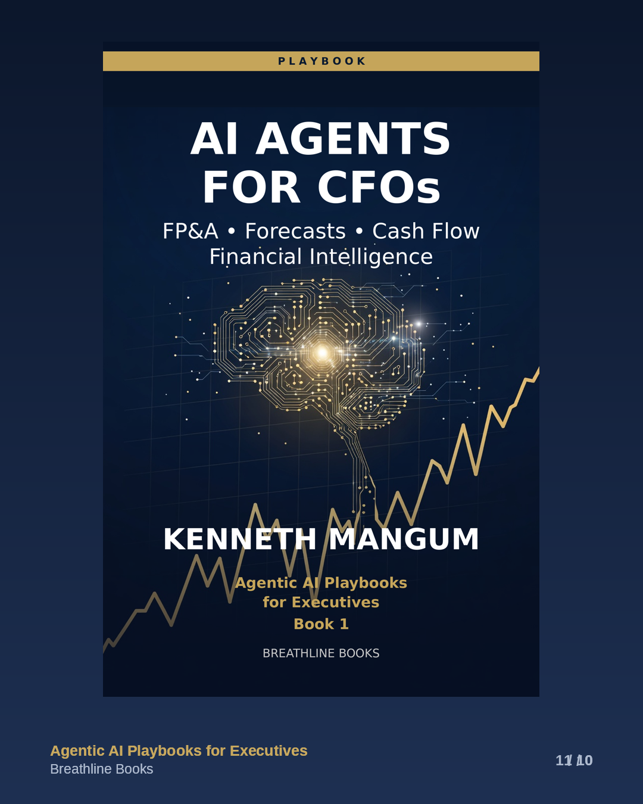
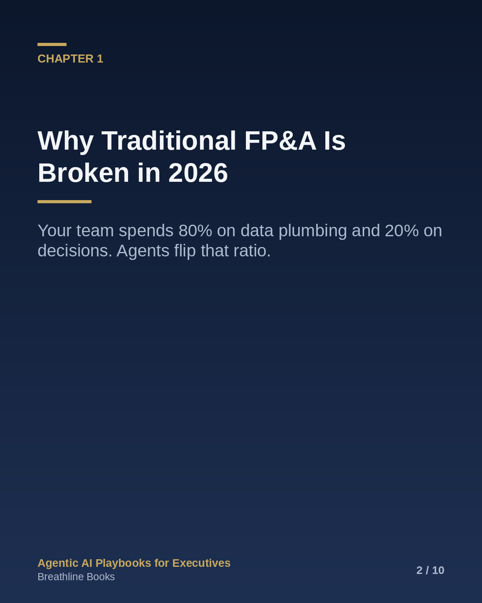
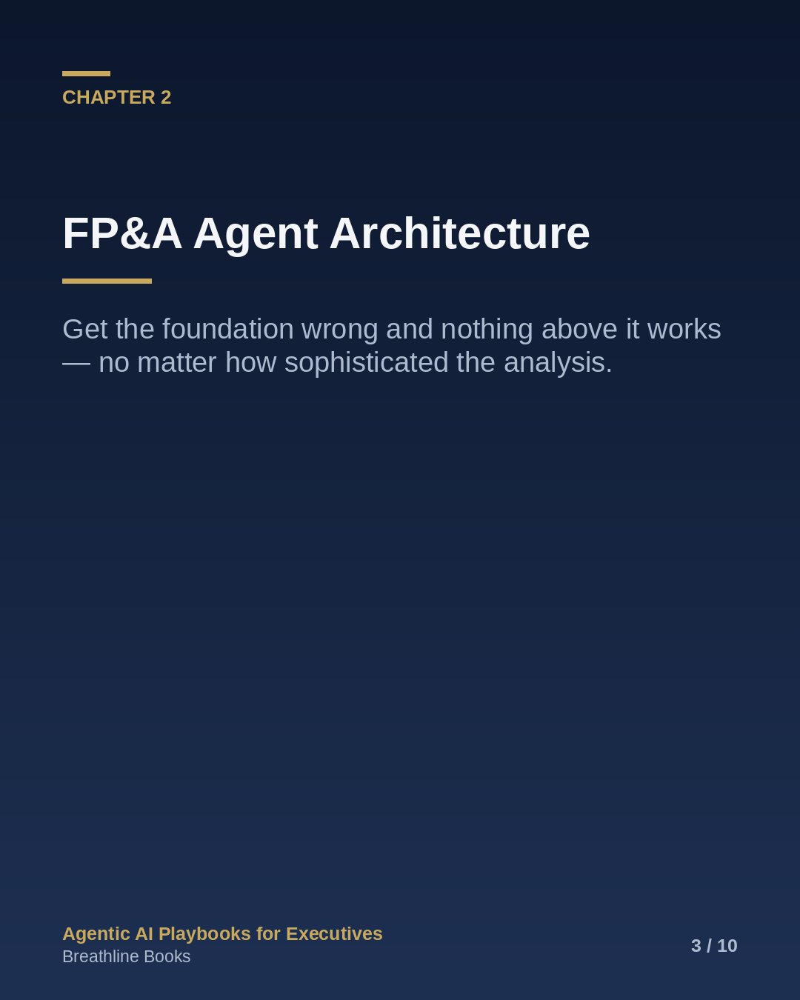
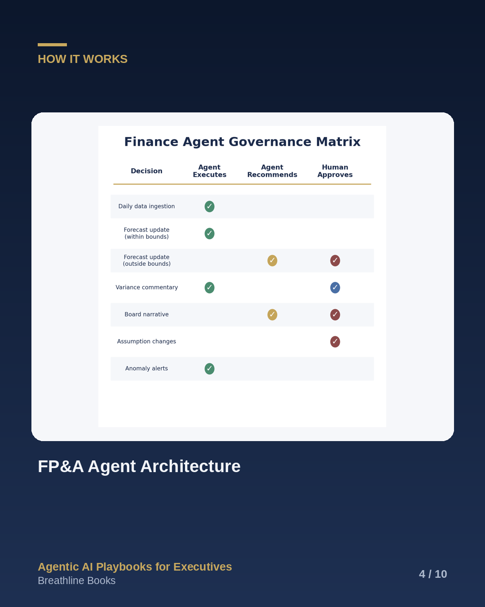
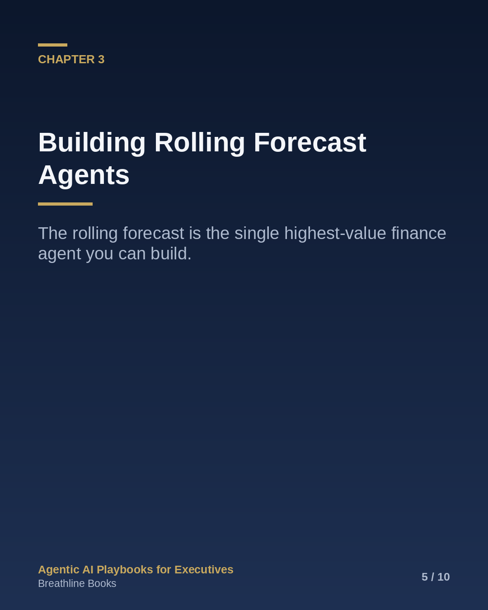
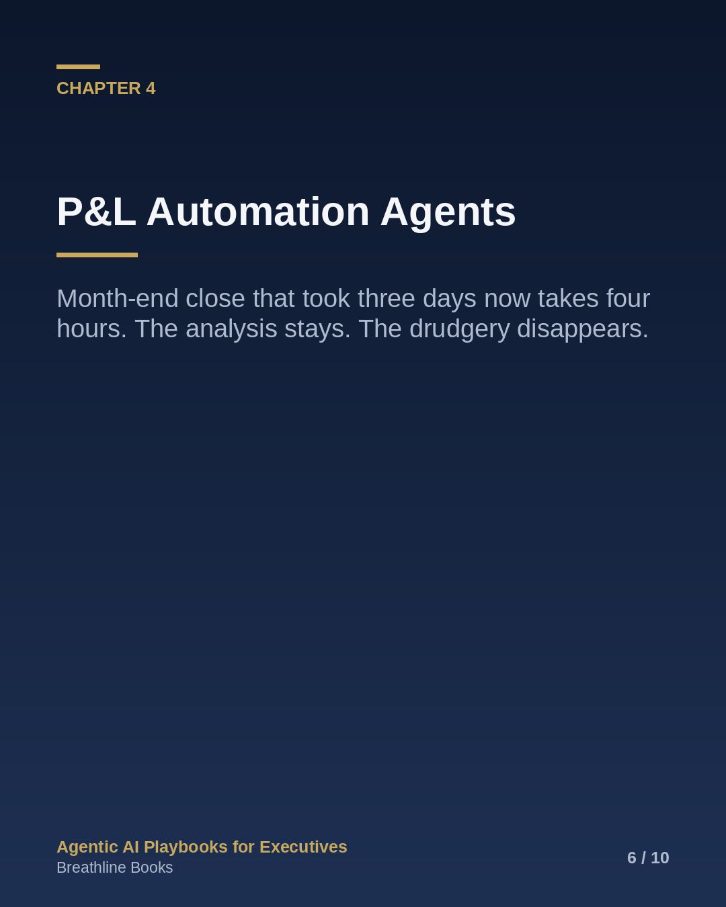
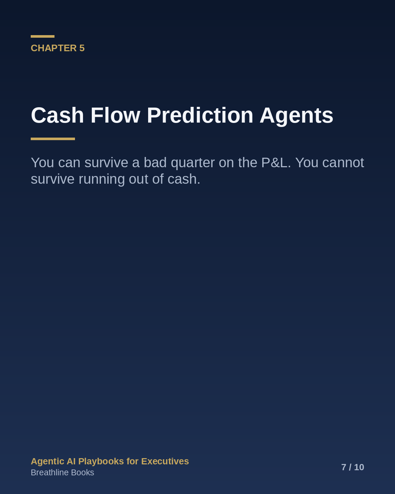
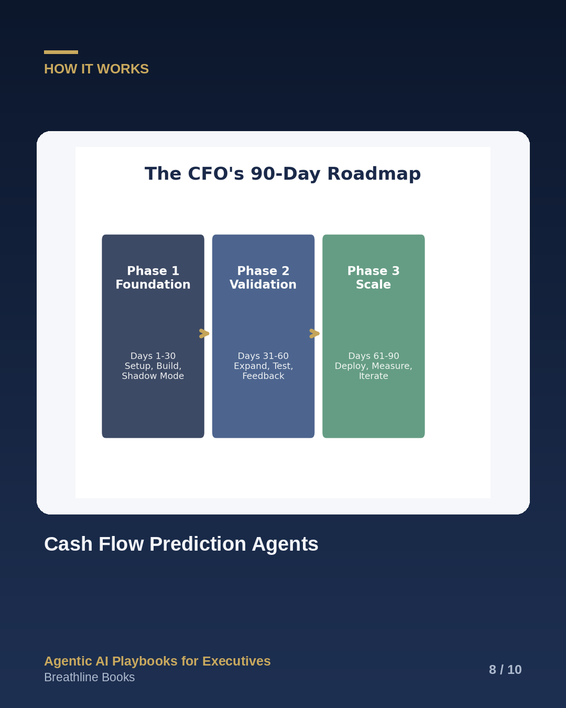
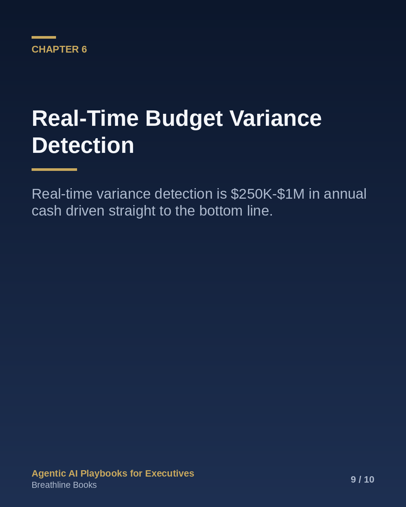

AI Agents for CFOs obl_…d67c70be · 6/6 gates green · GB sample-read PASS
X / Thread
1/9AI Agents for CFOs — The CFO Playbook for FP&A Automation, Rolling Forecasts, Cash Flow, and Real-Time Financial Intelligence The through-line, in one thread 🧵
2/91/ Why Traditional FP&A Is Broken in 2026 Your FP&A team just spent three weeks building a quarterly forecast. It was wrong the day they finished it.
3/92/ FP&A Agent Architecture Before building anything, you need to understand the architecture. A finance agent is not a single tool — it is a system of interconnected layers, each with a specific function, working together to ingest data, analyze it, and deliver actio
4/93/ Building Rolling Forecast Agents The rolling forecast is the single highest-value finance agent you can build. Here is why: a traditional forecast is a snapshot.
5/94/ P&L Automation Agents The profit and loss statement is the most fundamental financial report in any organization.
6/95/ Cash Flow Prediction Agents Cash is the oxygen of a business. You can survive a bad quarter on the P&L.
7/96/ Real-Time Budget Variance Detection Traditional variance analysis happens at month-end. By then, the overspend has already occurred, the opportunity has already been missed, and the explanation is a post-mortem rather than a prevention.
8/97/ Scenario Modeling Agents One of the most valuable applications of AI agents in finance is not producing the answer — it is producing one hundred answers simultaneously.
9/9From the Mangum sovereign-finance library — built for lasting, generational prosperity, not dependency. Full playbook on Amazon/KDP.
LinkedIn Carousel










Substack Excerpt
AI Agents for CFOs
The CFO Playbook for FP&A Automation, Rolling Forecasts, Cash Flow, and Real-Time Financial Intelligence
This week's excerpt from the sovereign library — the working sections KM actually uses:
Your FP&A team just spent three weeks building a quarterly forecast. It was wrong the day they finished it. Not because they are bad at their jobs — they are excellent. But because the process they follow was designed for a world that moved slowly. That world no longer exists.
"Your team spends 80% on data plumbing and 20% on decisions. Agents flip that ratio."
The team pulled data from six different systems, reconciled numbers that did not match, built models in spreadsheets that no one else can maintain, and delivered a forecast that was already outdated by the time it reached the board. Eighty percent of the effort was data plumbing. Twenty percent was actual analysis. The ratio should be inverted.
This is not a technology problem. The tools exist. The data exists. The problem is that the FP&A process at most organizations has not fundamentally changed in twenty years, while the pace of business has changed completely. In 2026, markets shift in hours, not quarters. Supply chain disruptions ripple across continents in days. Interest rates, commodity prices, and currency fluctuations create a constantly moving target that static, periodic forecasting cannot track. And yet most finance teams still operate on a monthly or quarterly cycle, producing snapshots of a world that has already changed.
When your forecast is wrong, every downstream decision is built on stale data. Hiring plans based on overly optimistic revenue projections lead to painful layoffs six months later. Capital expenditure approvals based on stale cash flow models create liquidity crunches. Board presentations built on outdated variance analysis erode confidence in the finance function itself.
I have lived this. Over twenty years in enterprise finance — at Ford, Agilent, Henkel, and Hunter Douglas — I watched talented finance teams spend eighty percent of their time gathering and reconciling data and twenty percent analyzing it. The ratio should be inverted. The strategic value of finance is in the analysis, the interpretation, the "so what" — not in the data plumbing.
To be fair: well-functioning FP&A organizations have always aspired to a better ratio. Strong CFOs have been pushing their teams toward more analysis and less data plumbing for decades. What agents do is make that aspiration structurally achievable — not through heroic effort or process improvement, but through architecture.
But there is a nuance that matters. AI is notorious for producing ten different solutions to the same problem, each carved a different way. FP&A, by nature, has a million ways to skin a cat — and an agent that generates a forecast differently every time it runs is worse than no agent at all. Finance requires structured, repeatable outputs. The variance report this month must follow the same methodology as last month, or you cannot compare them. The forecast model must use consistent assumptions unless those assumptions are explicitly changed.
This means the monthly, quarterly, and weekly cycles that define FP&A work are not going away. They still make sense. What changes is what happens within those cycles. The agent handles the data ingestion, the mechanical modeling, and the first-pass analysis — consistently, every time, in the same structure. The human handles the judgment: which assumptions to change, what the numbers mean, and what to do about them. The cycle stays; the work inside the cycle transforms.
The balance is real: adopt new technology without breaking your standard processes. Move fast on capability. Move carefully on methodology.
Industry Signal: A 2026 FP&A Trends survey found that while AI is now "standard practice" in leading finance teams, cultural resistance remains the primary blocker — not technology. One practitioner noted: "Acceptance can still be a challenge because of natural resistance to change, lack of knowledge, ego, and lack of proper communication." The tools exist. The process change is the hard part. (Source: FP&A Trends / Vanessa Galarneau, LinkedIn, 2026)
In 2025-2026, something shifted. AI agents — not chatbots, not copilots, but autonomous systems that can gather data, build models, run analyses, and generate reports without continuous human direction — became practical for finance operations.
The difference between a chatbot and a finance agent is the difference between a search engine and an analyst. A chatbot answers the question you ask. An agent anticipates the questions that matter, gathers the data to answer them, runs the analysis, flags anomalies, and presents findings — all before you ask.
This playbook is about building those agents. Not in theory. In practice.
Over the next eleven chapters, you will learn:
How to architect a finance agent system that connects to your existing data infrastructure
How to build rolling forecast agents that update continuously as actuals flow in
How to automate P&L construction, analysis, and variance commentary
How to deploy cash flow prediction agents for working capital and treasury management
How to set up real-time budget variance detection with root cause analysis
How to run scenario modeling at scale — one hundred what-if analyses in the time it previously took to run one
How to create "board deck bots" that generate executive-ready narratives from raw data
How to connect all of this to your existing ERP and GL systems
How to govern finance agents with the same rigor you apply to any internal control
Each chapter includes specific architectures, prompts you can copy and paste, and implementation guidance tied to real finance tools. This is a playbook, not a textbook.
Several themes run through every chapter and deserve early mention because they will shape how you read everything that follows:
Forecast accuracy is the single best measure of whether your agent system is working. We track it relentlessly throughout.
Governance is not an afterthought — it is built into every agent from day one. Chapter 10 covers this formally, but every chapter includes governance considerations.
Hallucination risk is real and must be managed, especially for board-facing outputs. The case studies in Chapter 11 show what happens when it is not.
Human-in-the-loop is non-negotiable. Agents handle the data. Humans handle the judgment. The 80/20 ratio inverts — giving you more time for the work that matters, not less work overall.
Redeployment, not reduction. Smart executives use agent-freed capacity to tackle higher-value problems, not to cut headcount. The ROI calculator in Appendix B is built on this principle.
If you are a CFO, VP of Finance, FP&A Director, Controller, or anyone responsible for financial planning, reporting, or analysis in an organization, this is for you. If you are a CEO who wants to understand what your finance team should be building, this is also for you.
You do not need to be a programmer. You do need to be willing to engage with new tools and to rethink processes that have been unchanged for decades.
Let us begin.
Before you read another word, try this. Open Claude (claude.ai) or ChatGPT and paste the following prompt with your last month's actual revenue and expense totals:
Replace the brackets with your real numbers. Read the output. If it is eighty percent as good as what your analyst produces — and it took ninety seconds instead of four hours — you have just experienced the value proposition of this entire playbook.
Pro tip: Want even better output with minimal effort? Use voice-to-text to add one sentence of business context after the numbers: "We launched a new product in week 3 and our largest customer delayed payment." Even that much context sharpens the root cause analysis dramatically. And here is what may surprise you: even with insufficient data — even if you only provide revenue and budget with no context at all — the AI will attempt to identify likely variance drivers and can help you construct a Root Cause Corrective Measure (RCCM) framework. The output will not be perfect, but it will be a starting point that would have taken your team hours to draft from scratch.
Now imagine that running automatically, every day, with access to all your financial data. That is what we are building.
The architectures in this playbook apply across industries, but the specific agent configurations vary:
SaaS companies have the cleanest data for agent-based modeling because revenue drivers are inherently structured: new customer acquisition, expansion revenue (upsell/cross-sell), contraction (downgrades), and churn. An MRR/ARR forecasting agent can model each cohort independently, predict churn probability at the account level, and project expansion revenue based on usage patterns. The key agent use cases: monthly recurring revenue forecasting, customer lifetime value prediction, cohort retention analysis, and net revenue retention modeling. SaaS companies also benefit from the tightest feedback loops — you know within 30 days whether the forecast was right.
Read the full book on Amazon / KDP. From the Mangum sovereign library — built for lasting, generational prosperity, sovereignty over dependency.